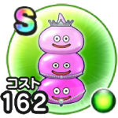

クイーンズももいろ三姉妹
宝の地図こころ最大コスト+4スキルHP回復効果+7%【海】バギ属性じゅもんダメージ+15%【海】スライム系へのダメージ+15%魅了耐性+15% / 7.5点
くわしい特徴
【ランク特殊効果】 こころ最大コスト+4スキルHP回復効果+7%【海】バギ属性じゅもんダメージ+15%【海】スライム系へのダメージ+15%魅了耐性+15%

宝の地図こころ最大コスト+4スキルHP回復効果+7%【海】バギ属性じゅもんダメージ+15%【海】スライム系へのダメージ+15%魅了耐性+15% / 7.5点
【ランク特殊効果】 こころ最大コスト+4スキルHP回復効果+7%【海】バギ属性じゅもんダメージ+15%【海】スライム系へのダメージ+15%魅了耐性+15%